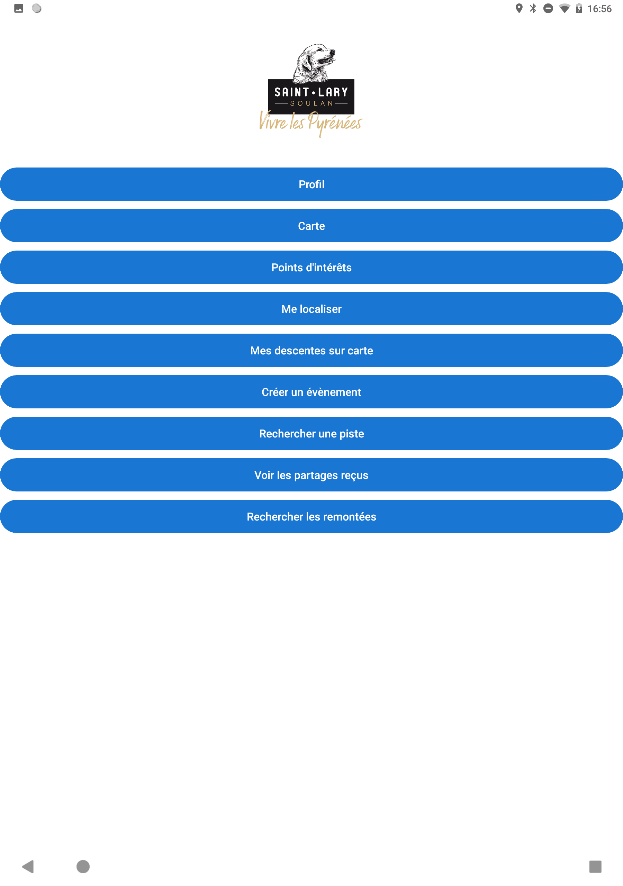
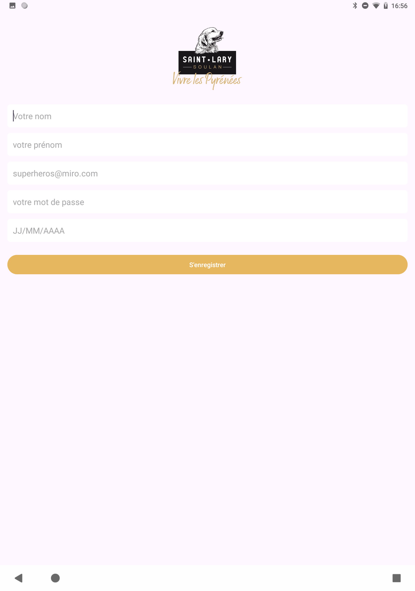

Présentation de l'application
Cette application Android en Java affiche séparement la liste de sites sportifs et de cinémas. Une carte affiche ensuite la localisation du lieu séléctionné ou de tous les lieux.


Technologies et techniques utilisées
- Android Studio : Environnement de développement intégré utilisé pour concevoir et développer l’application mobile Android en Java.
- Room utilisé pour stocker localement les données.
- API GoogleMap intégrée pour afficher la carte.
- Volley et RequestQueue effectuent les requêtes HTTP vers l'API.
- RecyclerView, Holder & Adapter pour afficher une liste dynamique d'éléments.



Amélioration de la compétence professionnelle
Ce projet m’a permis d’apprendre à développer la présence en ligne d'une organisation.
En effet, grâce au développement de cette application, j’ai appris à :
- Créer une application mobile connectée à une API.
- Utiliser les cartes et les listes dynamiques.